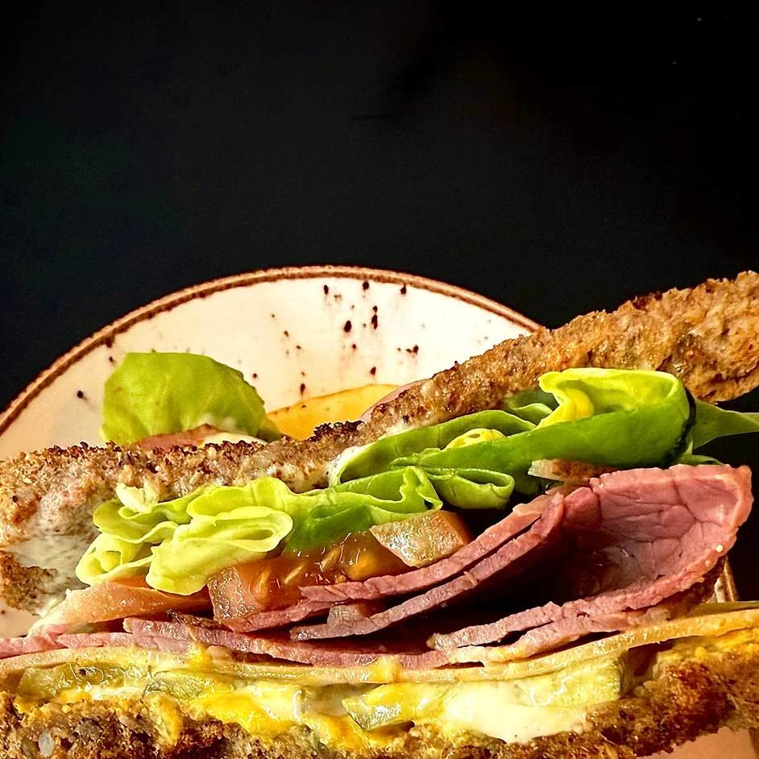
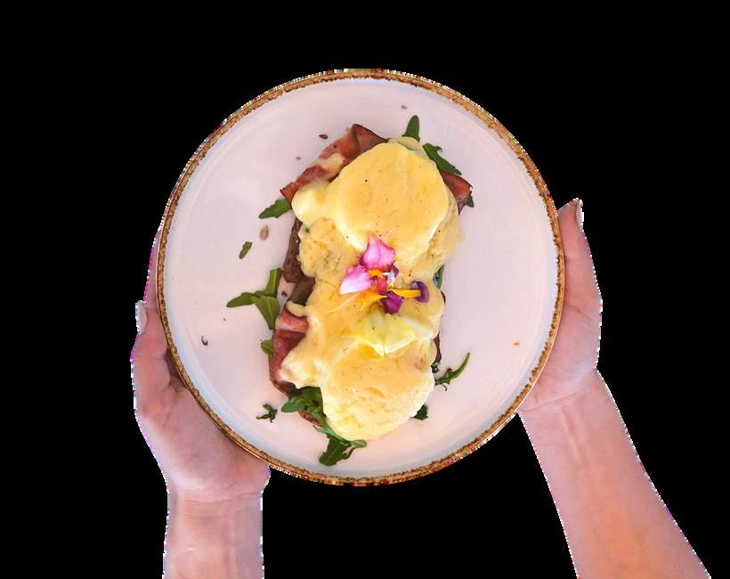

01
Bocadillos
Pitufo: blanco, integral o multicereales. Viena: blanco o mollete. Sin gluten +1 €. Ingrediente extra +1 €. Opción carne vegana +1,50 €. Serranito o Campestre con jamón ibérico de bellota: +1,50 €.
Vegetal
Pitufo3.20 €Viena / mollete4.70 €Bestiano
Pitufo3.90 €Viena / mollete5.90 €Don José
Pitufo3.40 €Viena / mollete4.90 €Nobrum
Pitufo3.50 €Viena / mollete5.00 €Serranito
Pitufo3.40 €Viena / mollete4.90 €Pavero
Pitufo3.30 €Viena / mollete4.70 €Bocagua
Pitufo2.80 €Viena / mollete3.90 €Torcate
Pitufo3.50 €Viena / mollete4.90 €Salmonete
Pitufo3.80 €Viena / mollete5.50 €Campestre
Pitufo2.90 €Viena / mollete4.20 €Torti
Pitufo2.80 €Viena / mollete4.00 €Tradicional
Pitufo2.40 €Viena / mollete3.80 €Tostada clásica
Pitufo1.90 €Viena / mollete2.90 €Embutido
Pitufo2.20 €Viena / mollete3.40 €
02
De huevos
Ingrediente extra +1 €. Desayunos hasta las 13:00; meriendas de 17:00 a 20:00.
Fortachona
6.50 €Huevos Munedict
7.90 €Inglé
6.90 €Aguator
5.90 €